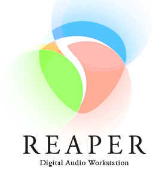

Projet Paysage
Description
Le projet consistait à réaliser un paysage sonore sur un thème choisi qui doit évoquer des émotions aux utilisateurs et créer un court métrage d'animation en lien avec le thème choisi. J'ai utilisé des synthétiseurs avec reaper, créer un court métrage d'animation de 60 secondes tout en modélisant l'oisseau, les nuages ect. J'ai aussi rendu mon paysage sonore intéractif grâce à Max.
Logiciel utilisé
Maya, Reaper et Max


Cadre du projet
Ce projet a été réalisé dans le cours d'animation 3D et en Audio 2.
Rôle
Dans ce projet, j'avais le rôle de modélisateur, de rigger, d'animateur et de concepteur sonore.